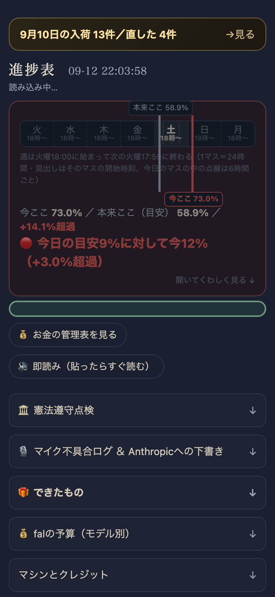
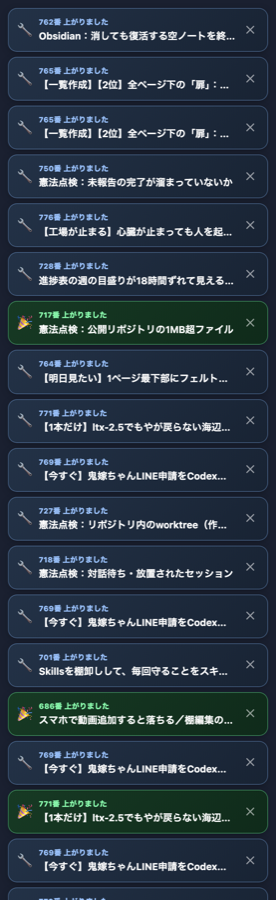

「昨日」で絞ると見つかる状態を実機で確認した。


| 確認項目 | 結果 |
|---|---|
| 「新しく作った／直した」タブで分かれている | yes |
| 「昨日」で絞ると#749（中目黒）が出てくる（実機DOM確認・rows=18・中目黒を含む） | yes |
| 検索欄に「中目黒」→1件ヒット（実機DOM確認） | yes |
| サムネイル付き・押せる（既存のdkrow・fetchCheckPageAssetsをそのまま使用） | yes |
| 1画面目（375px想定・430px幅で撮影）は畳まれた状態（open:false）で圧迫していない | yes |